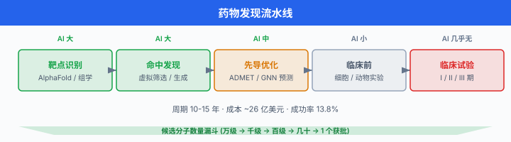
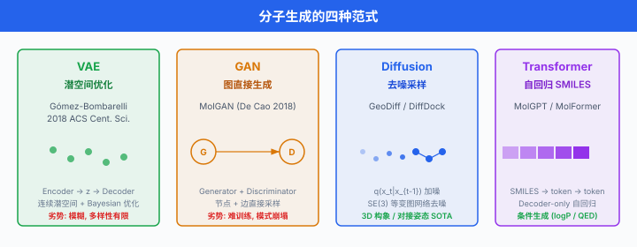
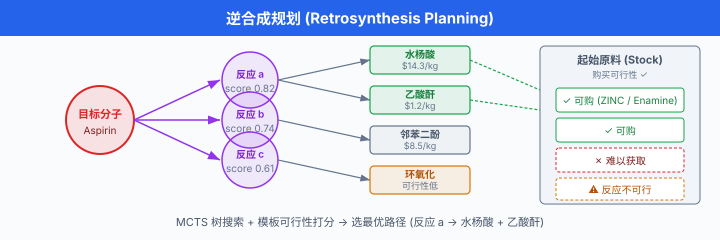
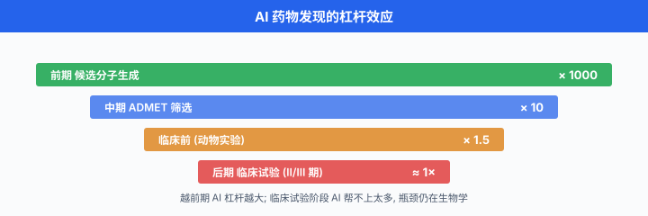

药物发现¶
一句话总结：药物发现是把 AI 用到极致的实验场——分子生成、对接打分、逆合成规划、ADMET 预测串起一条从"想出一个分子"到"能否成药"的完整流水线，目标是把传统 10-15 年、20 亿美元的研发周期砍掉一大半。
一款新药从靶点确定到 FDA 上市，平均要走 10-15 年、烧掉 20 亿美元级别的资金，而最终能上市的候选分子不足万分之一。 AI 不会一夜之间造出新药，但它能把 "先合成一百万个化合物再筛" 换成 "先在电脑里筛一百亿再合成几百个"，这一步的杠杆就足够改变整个行业.
1. 药物发现的完整流水线¶
在扎进具体算法前，先把整个流程摊开。 现代药物发现大致分为五个阶段，每一步都能被 AI 撬动:
- 靶点识别 (target identification)：确定一个与疾病相关的蛋白质 (或 RNA、复合物)，干预它能改善病情。 例：EGFR 之于非小细胞肺癌。
- 命中发现 (hit discovery)：找到与靶点结合、显示初步活性的小分子 (通常 \(\text{IC}_{50}\) 在微摩尔量级). 过去靠高通量筛选 (High-Throughput Screening, HTS)，现在越来越靠虚拟筛选。
- 先导化合物优化 (lead optimization)：把命中分子改造得更强 (亲和力 nM 级)、更选择性、更"能成药" (溶解度、代谢稳定、无毒性).
- 临床前研究 (preclinical)：细胞与动物实验，验证安全性与药效。
- 临床试验 (clinical trials): I 期 (安全性)、II 期 (剂量与效力)、III 期 (大规模疗效对照)，通过后交监管审批。
图示见 ../../images/ch19_03_pipeline.svg (建议)：从靶点到上市，每个节点标出 AI 的介入位置。

一个关键事实：越前期，AI 的杠杆越大. 命中发现阶段筛 10 亿分子的成本 AI 版可能是人工版的千分之一；而 III 期临床几百个病人的实验成本 AI 帮不上太多。 所以本节的重心也放在前三步。
2. 分子表示：让计算机 "看懂" 化合物¶
分子既有拓扑结构 (原子连成图)，又有几何构象 (三维空间坐标)，还有电子性质。 不同任务用不同表示:
2.1 SMILES (Simplified Molecular-Input Line-Entry System)¶
SMILES 把分子编码成 ASCII 字符串，阿司匹林是 CC(=O)OC1=CC=CC=C1C(=O)O. 优点是紧凑、能被序列模型 (Transformer / RNN) 直接消费；缺点是同一分子有多种合法写法，微小的字符错误会导致完全非法的化学式。
RDKit 里做规范化 (canonicalization):
from rdkit import Chem
mol = Chem.MolFromSmiles('OC(=O)c1ccccc1OC(C)=O')
canonical = Chem.MolToSmiles(mol)
# 'CC(=O)Oc1ccccc1C(=O)O' ← 规范形式
2.2 InChI (International Chemical Identifier)¶
IUPAC 主推的标识符，同一分子只有一种 InChI. 缺点是可读性差、字符串更长，序列模型不喜欢。 一般用来查库去重，不用来做生成。
2.3 分子图 (molecular graph)¶
原子是节点，化学键是边。 节点特征包含元素类型、电荷、杂化态；边特征包含键级 (单/双/三/芳香). 直接喂给图神经网络 (Graph Neural Network, GNN). 分子性质预测的主流表示。
一个原子 \(v\) 的初始特征 \(\mathbf{h}_v^{(0)}\) 拼接元素 one-hot、度数、氢原子数、形式电荷、芳香标志:
经过 \(L\) 层消息传递 (message passing) 后，每个节点得到语义嵌入 \(\mathbf{h}_v^{(L)}\)，再池化为分子级向量 \(\mathbf{z}_{\text{mol}} = \text{Pool}(\{\mathbf{h}_v^{(L)}\}_v)\).
2.4 三维构象 (3D conformer)¶
小分子在空间中不是刚体，会因单键旋转、环折叠产生多种能量最低的构象 (通常几十到几千个). 对接、活性预测都在意几何。 RDKit 的 AllChem.EmbedMultipleConfs 生成初始构象，MMFF94/UFF 力场做能量优化。 深度学习方法 (GeoDiff, ConfGF) 直接从图预测三维坐标，详见后文。
2.5 分子指纹 (molecular fingerprint)¶
Morgan/ECFP4 指纹把分子映射为固定长度 (1024 或 2048 bit) 的二进制向量，每个 bit 表示某个半径内的子结构是否存在。 又快又稳，是相似性检索与经典机器学习基线的老朋友。
3. 分子生成：让模型 "想出" 新分子¶
核心问题：化学空间估计有 \(10^{60}\) 个类药分子，全部枚举不可能。 我们要一个能采样出有效 (化学合法) + 有用 (性质符合目标) 分子的生成模型。
3.1 VAE-based: Gómez-Bombarelli 2018¶
Gómez-Bombarelli 等人 2018 年发表在 ACS Central Science 的 Automatic Chemical Design Using a Data-Driven Continuous Representation of Molecules1 开山之作：把 SMILES 塞进变分自编码器 (Variational Autoencoder, VAE)，学到一个连续潜空间，再在潜空间里做梯度优化。
编码器 \(q_\phi(\mathbf{z} \mid \mathbf{x})\) 把 SMILES 字符串 \(\mathbf{x}\) 编成潜变量 \(\mathbf{z} \in \mathbb{R}^d\) (通常 \(d=56\))；解码器 \(p_\theta(\mathbf{x} \mid \mathbf{z})\) 把 \(\mathbf{z}\) 解回 SMILES. 训练目标是标准的证据下界 (Evidence Lower Bound, ELBO):
其中先验 \(p(\mathbf{z}) = \mathcal{N}(\mathbf{0}, \mathbf{I})\). 训练完再联合训一个性质预测器 \(f(\mathbf{z}) \approx y\)，优化方向就是在潜空间对目标性质做梯度上升:
再解码 \(\mathbf{z}^*\) 得到新分子。 问题：早期 VAE 生成的 SMILES 常常语法不合法。 后续的 Grammar VAE (Kusner 2017) 与 JT-VAE (Jin et al. 2018, Junction Tree VAE) 用语法约束或树分解显著改进合法率。
3.2 GAN-based: MolGAN¶
De Cao 与 Kipf 2018 年提出 MolGAN2，直接生成小分子图：生成器输出邻接张量 \(\mathbf{A} \in \mathbb{R}^{N \times N \times T}\) (含 \(T\) 种键类型) 与节点特征 \(\mathbf{X} \in \mathbb{R}^{N \times F}\)；判别器与奖励网络分别评估真实性与药物相似性。 训练目标是标准 WGAN-GP 目标加一个强化学习奖励:
其中 \(R(\mathbf{G})\) 可以是 QED 分数或 logP 等。 MolGAN 生成合法率高、速度快，但模式坍塌严重，输出多样性不足。 后续工作 (MolCycleGAN, MolecularRNN) 各有改进。
3.3 Diffusion-based: DiffDock 与 GeoDiff¶
近两年扩散模型 (diffusion model) 席卷生成任务，分子领域也不例外。
GeoDiff (Xu 等 2022, ICLR)3：在三维构象空间做扩散。 给定分子图 \(\mathcal{G}\)，学习条件分布 \(p(\mathbf{R} \mid \mathcal{G})\)，其中 \(\mathbf{R} \in \mathbb{R}^{N \times 3}\) 是原子坐标。 前向过程逐步加高斯噪声:
反向过程用一个等变 (equivariant) 图神经网络预测噪声，保证旋转/平移不变。 关键设计是把坐标建模在 SE(3) 等变的表示下，而不是直接学 \(\mathbb{R}^{N \times 3}\).
DiffDock (Corso, Stärk, Jing, Barzilay, Jaakkola 2022; ICLR 2023)4：把小分子对接问题重新表述为在 "位置 (translation) × 朝向 (rotation) × 可旋转键扭转角 (torsion)" 组成的乘积流形上做扩散。 状态空间是:
其中 \(m\) 是可旋转键数。 对每个空间分量分别定义扩散过程 (欧式空间用高斯，SO(3) 用 IGSO(3), SO(2) 用环形高斯). 反向过程用一个 SE(3) 等变模型给出得分，采样出配体在受体口袋中的最佳姿态。 DiffDock 在 PDBBind 测试集上把 "top-1 RMSD < 2 Å" 的成功率从 AutoDock Vina 的 20% 左右提到 38%+.
3.4 语言模型路线：MolGPT 与 chem LLM¶
分子的 SMILES 就是字符串，用 GPT 风格的 Transformer 做自回归生成天然合适。 Bagal 等 2021 年的 MolGPT5 用 6 层 Decoder-only Transformer 在 MOSES / GuacaMol 数据集上训练，支持条件生成 (指定 logP、QED、SAS 等)：
# 伪代码: 条件生成
prompt_tokens = tokenize(f"<qed=0.9><logp=2.5><sas=2>")
generated = model.generate(
prompt_tokens,
max_length=100,
temperature=0.8,
top_p=0.95,
)
smiles = detokenize(generated)
mol = Chem.MolFromSmiles(smiles)
assert mol is not None, "生成的 SMILES 不合法"
近两年更进一步的 MolFormer、Chemformer、MoleculeSTM、ChemLLM 等模型把预训练规模推到千万级 SMILES，学到通用的化学表示，下游做性质预测、分子编辑、逆合成都能微调。

4. 分子对接：从分子到姿态¶
命中分子只是候选，还要看它能不能真的结合到靶点口袋里，以及结合有多强。 这就是分子对接 (molecular docking) 要回答的问题。
4.1 经典方法：AutoDock 与 Rosetta¶
AutoDock (Morris et al. 1998, 2009) 与 AutoDock Vina (Trott & Olson 2010)6 是学术界最常用的开源对接工具。 核心分两部分:
- 搜索：在配体 6 自由度刚体位姿 + \(m\) 个扭转角上搜索，用遗传算法 (AutoDock 4) 或迭代局部搜索 (Vina).
- 打分：一个经验能量函数 \(E(\mathbf{r})\)，综合范德华、氢键、静电、疏水与扭转熵惩罚:
其中权重 \(W_\cdot\) 由 PDBBind 训练集回归得到。 Rosetta 是 Baker 实验室的通用大工具箱，除了小分子对接还能做蛋白质设计，打分函数 (Ref15, β-nov16) 更复杂，但需要一定的手工调参。
4.2 ML 打分函数：RF-Score, Gnina¶
经典能量函数假设可加性，高估了物理直觉的可迁移性。 ML 方法 (随机森林、CNN) 直接从 PDBBind 数据学 \(\hat{K}_d\) 或 \(\hat{\text{IC}}_{50}\)，例如:
- RF-Score (Ballester & Mitchell 2010)：用配体-受体原子对距离的 histogram + 随机森林。
- Gnina (McNutt et al. 2021)：在 AutoDock 里插入一个 CNN 打分函数，输入是三维网格化的复合物。
4.3 端到端 ML 对接：DiffDock 与后续¶
前面提到的 DiffDock 本质就是端到端的对接方法：输入 (蛋白，分子图)，输出配体在口袋中的三维位姿。 它跳过了经典方法的 "搜索 + 打分" 两阶段，直接学一个位姿的条件分布。 缺点是仍需要经典力场做 refinement，且对未见靶点泛化不足 (2024 年后续工作 DiffDock-L、DynamicBind 各有改进).
关键指标：对接方法的评价看 top-K RMSD (预测位姿与晶体结构的均方根距离):
行业习惯把 RMSD \(\leq 2\) Å 视为 "对接成功".
5. ADMET 预测：分子能不能成药¶
即便分子结合得很好，还要过 ADMET 五关:
- Absorption (吸收)：口服后能否进入血液。 常用指标：溶解度 (logS)、Caco-2 通透性、人体口服生物利用度 (F%).
- Distribution (分布)：分布到组织的能力。 血脑屏障通透性 (BBB)，血浆蛋白结合率。
- Metabolism (代谢)：主要在肝脏被 CYP450 酶代谢，关心 CYP1A2/2C9/2C19/2D6/3A4 的抑制与底物性质。
- Excretion (排泄)：半衰期 \(t_{1/2}\)，肾/胆清除率。
- Toxicity (毒性): hERG 心脏毒性、Ames 致突变性、肝毒性、皮肤致敏。
主流数据集: MoleculeNet (Wu et al. 2018) 收集了 ClinTox, SIDER, Tox21, Tox-Cast, BBBP 等；Therapeutics Data Commons (TDC) 更全面，覆盖 66+ ADMET 任务。
主流模型：图神经网络 (D-MPNN / Chemprop, Yang et al. 2019)，图 Transformer，化学预训练模型 (MolBERT, MolFormer). 基本用法:
import chemprop
# 训练一个 hERG 毒性预测模型
arguments = [
'--data_path', 'herg_train.csv',
'--dataset_type', 'classification',
'--save_dir', 'herg_model/',
'--num_folds', '5',
'--epochs', '30',
]
args = chemprop.args.TrainArgs().parse_args(arguments)
mean_score, std_score = chemprop.train.cross_validate(
args=args,
train_func=chemprop.train.run_training,
)
# 预测新分子
preds = chemprop.train.make_predictions(
args=chemprop.args.PredictArgs().parse_args([
'--test_path', 'candidates.csv',
'--checkpoint_dir', 'herg_model/',
'--preds_path', 'preds.csv',
]),
)
类药性 QED (Quantitative Estimate of Drug-likeness): Bickerton 等 2012 年在 Nature Chemistry 提出7，综合 8 个描述符 (分子量、logP、TPSA、HBA、HBD、可旋转键数、芳香环数、结构警报) 的期望满意度函数:
其中 \(d_i\) 是每个描述符的"欲望函数" (desirability)，值域 \([0, 1]\); QED 越接近 1 越像已上市药。 QED 只是一个粗略先验，别当唯一决策标准。
6. 逆合成预测：分子如何合成出来¶
问题：给定目标分子，从可购买的起始原料出发，找出一条 (或多条) 合成路线。
6.1 里程碑：Segler 2018 Nature¶
Segler, Preuss 与 Waller 2018 年在 Nature 发表 Planning chemical syntheses with deep neural networks and symbolic AI8：用三个深度网络分别做
- 产物 → 反应类型 的分类 (17,134 类模板);
- 反应类型 + 产物 → 反应物 的生成;
- 可行性 (in-scope) 判别。
外层套一个蒙特卡罗树搜索 (Monte Carlo Tree Search, MCTS)，从目标分子出发，每一步选一个反应模板，直到所有叶子都是可购买的起始物。 论文用双盲测试，化学家对 AI 与人类合成路线的偏好基本相当 (成功率 79% vs 72%).
MCTS 里 UCT 得分:
其中 \(Q(s, a)\) 是节点当前的估值，\(N(s)\) 是父节点访问次数。 与 AlphaGo 里一样，只是把动作换成了"选反应模板".
6.2 AiZynthFinder：开源工业级¶
AstraZeneca 的 Genheden 等 2020 年开源了 AiZynthFinder9: Python 实现，完整复现 Segler 的三网络 + MCTS 架构，支持自定义模板库与 stock (可购买原料库). 一次典型调用:
from aizynthfinder.aizynthfinder import AiZynthFinder
finder = AiZynthFinder(configfile='config.yml')
finder.stock.select('zinc')
finder.expansion_policy.select('uspto')
finder.filter_policy.select('uspto')
finder.target_smiles = 'CC(=O)Oc1ccccc1C(=O)O' # 阿司匹林
finder.tree_search()
finder.build_routes()
for route in finder.routes[:5]:
print(route.reaction_tree)
print(f'score = {route.score:.3f}')
6.3 Template-free 路线：Transformer 直接生成反应物¶
Molecular Transformer (Schwaller et al. 2019) 用一个标准的 Transformer 做序列到序列 (SMILES 反应物 ↔ 产物). 逆合成方向直接给产物 SMILES，模型自回归解出反应物 SMILES. 优点是不受模板限制，缺点是不可控、失效模式怪异。 现代方案通常"模板 + 模板无"两路并行，取交集。

7. 虚拟筛选：从十亿库里挑候选¶
虚拟筛选 (virtual screening) 就是把候选库过一遍你的靶点，排出前 K 名去合成实验。 库的规模在飞速膨胀:
- ZINC15 (2015)：约 1000 万现货 + 亿级可合成。
- ZINC20 (2020): 14 亿分子，大多来自 "make-on-demand" 库 (如 Enamine REAL).
- Enamine REAL Space (2024)：达到 330 亿 分子，都是理论可合成的。
7.1 Lyu 2019 Nature：超大库 docking¶
Lyu, Wang, Shoichet 等 2019 年在 Nature 报道 Ultra-large library docking for discovering new chemotypes10：用 DOCK3.7 对 1.7 亿分子 做对接，找到了 D4 多巴胺受体的新型激动剂。 关键结论：库越大，命中率不会线性掉，而是多样性会显著提升，新颖骨架 (chemotype) 覆盖增加。
计算成本：1.7 亿分子 × 数千 CPU 核 × 数天。 一台笔记本跑不完，但对制药公司是可接受的算力预算。
7.2 ML 加速：主动学习 + 代理模型¶
暴力对接 300 亿分子仍不现实。 Graff 等 2021 年提出主动学习虚拟筛选：先对 0.1% 分子做对接得到标签，训练一个廉价的图神经网络 \(\hat{f}(\text{mol})\) 做代理，剩下 99.9% 只用 \(\hat{f}\) 排序，顶尖分子再回到对接管道验证。 通常能用 1-2% 的对接预算复现 Top-K 命中的 80-90%.
流程伪代码:
labeled = random_sample(library, n=100_000)
labels = docking_batch(target, labeled) # 昂贵
model = GNN().fit(labeled, labels)
for round in range(10):
scores = model.predict(library - labeled)
# 探索 + 利用
candidates = top_k(scores, k=50_000) + random_sample(library, n=10_000)
new_labels = docking_batch(target, candidates) # 追加打对接标签
labeled.update(zip(candidates, new_labels))
model.fit(labeled, labels + new_labels)
final_top = model.predict(library).top_k(1000)
8. 生成模型评估：别只看 QED¶
分子生成论文里最常报的四组指标:
- Validity (有效性)：生成的 SMILES 有多少能被 RDKit 解析。 现代模型基本 > 95%.
- Uniqueness (唯一性): 1000 个采样里去重后剩多少。 反映模式坍塌。
- Novelty (新颖性)：生成分子不在训练集中的比例。
- Diversity (多样性)：集合内两两 Tanimoto 相似度的平均值 (低越好)，或者 Fréchet ChemNet Distance (FCD，类比图像的 FID).
其中 \(\mu, \Sigma\) 是把分子映射到 ChemNet 隐层后的均值与协方差。 FCD 越小，生成分布越接近真实分布。
基准平台: MOSES (Polykovskiy et al. 2020) 与 GuacaMol (Brown et al. 2019) 是社区公认的两个 leaderboard，前者更看分布匹配，后者更看目标导向 (给定目标分子，生成尽量像的候选).
Goodhart 陷阱：只优化 QED 会得到一堆长得像"药"的平庸分子；只优化对接得分会得到高亲和力但完全不能合成的怪物 (常见 sanction：分子里塞满了 hERG 触发子结构). 多目标优化 + 合成难度 (SAS) 惩罚 才是靠谱做法:
9. 中国生态：制药 AI 的本土玩家¶
制药 AI 是少数几个中国公司做到全球第一梯队的赛道，值得单列一节。
9.1 晶泰科技 (XtalPi)¶
2015 年 MIT 博士团队创立，早期做量子力学晶型预测，后扩展到 AI 分子设计 + 云端湿实验。 2024 年在港交所上市。 与辉瑞、强生等有联合项目，也自研管线。 特色：AI 与湿实验闭环，有自家的自动化合成与分析实验室。 官方 GitHub 有开源工具 XPScore, MoLFormer-XL (联合 IBM) 等。
9.2 华为盘古分子 (Pangu Drug Model)¶
华为云 2022 年发布盘古药物分子大模型，团队与上海交大医学院合作。 主打:
- 基于图 Transformer 的分子表示学习，预训练在 17 亿分子上;
- 支持性质预测 (20+ ADMET)、分子生成、优化与检索;
- 部署在华为云 EI 上，通过 API 或 ModelArts 调用。
盘古团队 2022 年在 Nature Communications 发表 Chai 等的工作 (A knowledge-guided pre-training framework for improving molecular representation learning)，有开源代码。
9.3 百度 PaddleHelix¶
百度飞桨生态下的生物计算工具集，一站式提供:
- HelixGEM / HelixGEM-2：分子表示学习，分别是几何增强的 GNN 与几何自监督;
- HelixFold：蛋白质结构预测，PaddlePaddle 版 AlphaFold2，后来发布 HelixFold3 (含小分子 + 核酸);
- ScreenMate：虚拟筛选流水线;
- 全部开源在 https://github.com/PaddlePaddle/PaddleHelix，商业化通过 "百度智慧医疗" 落地。
9.4 其他值得一提¶
- 深势科技 (DP Technology): Uni-Mol / Uni-Fold 系列，从分子力学到蛋白结构一条龙；DeePMD-kit 是分子动力学圈的常用工具。
- 腾讯 iDrug：侧重虚拟筛选与药物再定位；AI Lab 与 mila-quebec 有合作。
- 英矽智能 (Insilico Medicine)：香港 + 苏州，2024 年首个 AI 设计的 II 期临床候选药 (INS018_055，治疗特发性肺纤维化) 完成入组。
10. 案例：AI 到底加速了多少¶
用最常被引用的 DiMasi 等 2016 年 Journal of Health Economics 研究11:
- 新药平均研发成本：26 亿美元 (税前，含失败项目)
- 平均周期：10-15 年 (从靶点到 FDA 批准)
- 临床试验成功率：13.8% (进入 I 期到最终批准)
AI 目前的成绩单 (2024 年公开数据):
- Insilico Medicine 的 INS018_055 从靶点识别到 IND (研究性新药申请) 只用了 18 个月，传统平均 4-5 年;
- BenevolentAI 用知识图谱识别巴瑞替尼 (baricitinib) 作为 COVID-19 治疗药，2020 年 2 月发文，后被 FDA 授权紧急使用;
- Exscientia 的 DSP-1181 (强迫症) 2020 年成为首个进入 I 期临床的 AI 设计分子，从项目启动到 I 期用时 12 个月；但该药随后因缺乏疗效而终止开发，被视为 AI 药物发现领域的一个重要教训。
但要清醒：上述都是前期加速. 临床 II/III 期的失败率并没有因为 AI 出现而显著下降，药物开发的真正瓶颈仍在生物学复杂性 (副作用、剂量响应、患者异质性), AI 只是帮我们更聪明地选择在哪里烧钱.

📌 本节要点¶
- 流水线：药物发现分靶点识别 → 命中发现 → 先导优化 → 临床前 → 临床试验五步，AI 主要撬动前三步，越前期杠杆越大。
- 分子表示: SMILES / InChI 是字符串，分子图 (molecular graph) 是拓扑，三维构象 (3D conformer) 是几何，指纹是二进制向量，不同任务用不同表示。
- 分子生成: VAE (Gómez-Bombarelli 2018) 学连续潜空间，GAN (MolGAN) 直生图，扩散模型 (GeoDiff, DiffDock) 在几何流形上去噪，语言模型 (MolGPT / MolFormer) 自回归 SMILES.
- 对接：经典 AutoDock Vina / Rosetta 靠搜索 + 能量函数，ML 打分函数 (RF-Score, Gnina) 数据驱动，DiffDock 端到端预测配体位姿，RMSD \(\leq 2\) Å 判成功。
- ADMET：五关 (吸收、分布、代谢、排泄、毒性) 用 MoleculeNet / TDC 数据集训图神经网络；QED 只是粗略先验，别当唯一决策标准。
- 逆合成: Segler 2018 Nature 三网络 + MCTS 是里程碑，AiZynthFinder 开源可跑；Molecular Transformer 走模板无路线，两路并行更稳。
- 虚拟筛选：库规模到百亿量级 (Enamine REAL 330 亿), Lyu 2019 Nature 展示 1.7 亿库超大对接可行，主动学习 + 代理模型能把成本压 50 倍以上。
- 中国生态：晶泰科技 (AI + 湿实验闭环)、华为盘古分子、百度 PaddleHelix (HelixFold3)、深势 Uni-Mol、英矽 (首个 AI II 期候选药) 都已进入国际视野。
参考文献¶
-
Gómez-Bombarelli, R., Wei, J. N., Duvenaud, D., et al. (2018). Automatic Chemical Design Using a Data-Driven Continuous Representation of Molecules. ACS Central Science, 4(2), 268–276. arXiv:1610.02415. ↩
-
De Cao, N., & Kipf, T. (2018). MolGAN: An implicit generative model for small molecular graphs. ICML Workshop on Theoretical Foundations and Applications of Deep Generative Models. arXiv:1805.11973. ↩
-
Xu, M., Yu, L., Song, Y., Shi, C., Ermon, S., & Tang, J. (2022). GeoDiff: A Geometric Diffusion Model for Molecular Conformation Generation. ICLR 2022. arXiv:2203.02923. ↩
-
Corso, G., Stärk, H., Jing, B., Barzilay, R., & Jaakkola, T. (2022). DiffDock: Diffusion Steps, Twists, and Turns for Molecular Docking. ICLR 2023. arXiv:2210.01776. ↩
-
Bagal, V., Aggarwal, R., Vinod, P. K., & Priyakumar, U. D. (2021). MolGPT: Molecular Generation Using a Transformer-Decoder Model. Journal of Chemical Information and Modeling, 62(9), 2064–2076. ↩
-
Trott, O., & Olson, A. J. (2010). AutoDock Vina: Improving the speed and accuracy of docking with a new scoring function, efficient optimization, and multithreading. Journal of Computational Chemistry, 31(2), 455–461. ↩
-
Bickerton, G. R., Paolini, G. V., Besnard, J., Muresan, S., & Hopkins, A. L. (2012). Quantifying the chemical beauty of drugs. Nature Chemistry, 4(2), 90–98. ↩
-
Segler, M. H. S., Preuss, M., & Waller, M. P. (2018). Planning chemical syntheses with deep neural networks and symbolic AI. Nature, 555(7698), 604–610. ↩
-
Genheden, S., Thakkar, A., Chadimová, V., Reymond, J.-L., Engkvist, O., & Bjerrum, E. (2020). AiZynthFinder: a fast, robust and flexible open-source software for retrosynthetic planning. Journal of Cheminformatics, 12(1), 70. ↩
-
Lyu, J., Wang, S., Balius, T. E., et al. (2019). Ultra-large library docking for discovering new chemotypes. Nature, 566(7743), 224–229. ↩
-
DiMasi, J. A., Grabowski, H. G., & Hansen, R. W. (2016). Innovation in the pharmaceutical industry: New estimates of R&D costs. Journal of Health Economics, 47, 20–33. ↩